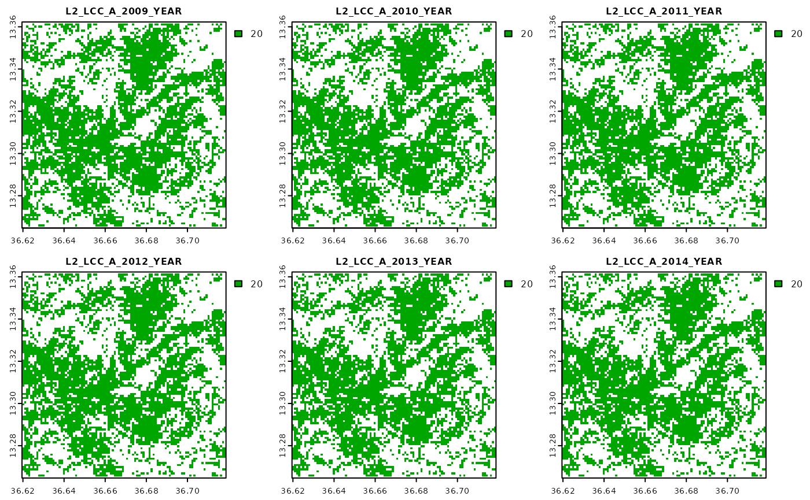

Calculate Productivity Indicators
Last modified: 2021-09-02
usage.RmdGetting Started
In this documentation we are presenting how to use the mapme.wapor package to download and process data sets from the FAO WaPOR API to calculate several indices to assess biomass water productivity. WaPOR makes available several layers at different resolutions concerned with agricultural productivity. While this package can be used do download several of these layers, we will focus on the ones that are required to calculate supported productivity indices. These product are:
- Total Biomass Productivity (TBP): This data layer indicates the total biomass production (kg/ha) for two distinct seasons every year
- Phenology (PHE): This data layer indicates the decade the start and end of season in a given pixel was detected. It is used to aggregate other indicators according to the length of the respective season
- Land Cover Classifcation (LCC): This data layer delivers a broad classification scheme of land cover /land use and it is used to focus the analysis on specific land covers
- Transpiration (T): This data layer indicats decadal transpiration values (mm) for each pixel. It is used to calculate the total amount of transpired water by plants during the length of the growing season
- Gross Biomass Water Productivity (GBWP): This data layer indicates the amount of water used in the production of biomass (kg/m³). It is a gross estimate because besides plant transpiration also soil evaporation and interception is included. The package will calculate net biomass water productivity based on the transpiration layer
Download input data
Above mentioned products are needed for the other functions to work properly. We can use the download function to download other products as well, however, this is out of scope for this vignette. In the code chunk below we show how the download utility can be used to query a spatio-temporal domain for download. Note that you will need a personal API key that can be acquired in the user section of the WaPOR website.
aoi = st_read(system.file("extdata", "aoi.gpkg", package = "mapme.agriculture"))
aoi = st_transform(aoi, 4326) # transform to WGS84 because the API expects lat/lon coordinates
collection = "WAPOR_2" # wapor colletion 2.0
products = list("TBP" = "L2_TBP_S",
"PHE" = "L2_PHE_S",
"LCC" = "L2_LCC_A",
"T" = "L2_T_D",
"GBWP" = "L2_GBWP_S") # The products we want to download
begin = as.Date("2009-01-01") # begin date is inclusive
end = as.Date("2015-01-01") # end date is exclusive
APIkey = "<-your key goes here->" # can be obtained in the profile section of the WAPOR website
dir.creat("data")
for(i in 1:length(products)){ # download products in a loop
wapor_queryRaster(collection = collection,
product = products[[i]],
aoi = aoi,
begin = begin,
end = end,
APIkey = APIkey,
outdir = system.file("extdata", "input", package = "mapme.agriculture"),
cutline = FALSE,
tiled = TRUE,
compressed = TRUE,
overviews = TRUE,
sleep_time = 2) # increase sleep time for larger extents to avoid being banned
}The above function call will download the queried products to the data directory. Note that downloading larger raster extents can take a while because the FAO server will need to process the query. Make sure to increase the sleep time of the function to an appropriate value to avoid querying the server to frequently for the current status.
Calculation of NBWP
With the package we deliver some previously downloaded raster files to showcase how we can process these. The very first step would be to calculate the Net Biomass Water Productivity, that is the ratio between biomass produced to transpiration only. For this we provide the wapor_nbwp function. Note that NBWP can only be calculated when data for transpiration from the previous year as well as the complete following year is available. The reason is that, depending on where we are on the globe, a growing season might start in the previous year and it might as well extend to the following year. That is also why the earliest year we can calculate NBWP is 2010, because WaPOR transpiration data is available from 2009 onwards. The function will cause an error either if a year before 2010 is queried or if the last year is later than the previous year at the time the function is called. Besides the numeric vector indicating the years we are interested in we need to supply the function with a single character vector of the input files. Note that the names of these files follow a certain standard so they should not be changed after download. Additionally, you should specify an output directory where two new directories are created. In the first step the function sums up the seasonal total sum of transpiration and outputs these rasters to a directory called “T_S”. In the next step the seasonal total biomass production is divided by the seasonal transpiration to get NBWP. These rasters are written to a directory called “NBWP”.
input_files = list.files(system.file("extdata", "input", package = "mapme.agriculture"), recursive = T, pattern = ".tif", full.names = T)
dir.create(system.file("extdata", "intermediate", package = "mapme.agriculture"), showWarnings = F)
nbwp_files = wapor_nbwp(input_files = input_files,
years = 2010:2014,
outdir = system.file("extdata", "intermediate", package = "mapme.agriculture"),
verbose = T)
#> Starting calculation for year 2010.
#> Starting to mask raster files according to mask values...
#> Starting calculation of seasonal transpiration for season S1...
#> Starting calculation of seasonal transpiration for season S2...
#> Starting calculation of seasonal NBWP...
#> Starting calculation for year 2011.
#> Starting to mask raster files according to mask values...
#> Starting calculation of seasonal transpiration for season S1...
#> Starting calculation of seasonal transpiration for season S2...
#> Starting calculation of seasonal NBWP...
#> Starting calculation for year 2012.
#> Starting to mask raster files according to mask values...
#> Starting calculation of seasonal transpiration for season S1...
#> Starting calculation of seasonal transpiration for season S2...
#> Starting calculation of seasonal NBWP...
#> Starting calculation for year 2013.
#> Starting to mask raster files according to mask values...
#> Starting calculation of seasonal transpiration for season S1...
#> Starting calculation of seasonal transpiration for season S2...
#> Starting calculation of seasonal NBWP...
#> Starting calculation for year 2014.
#> Starting to mask raster files according to mask values...
#> Starting calculation of seasonal transpiration for season S1...
#> Starting calculation of seasonal transpiration for season S2...
#> Starting calculation of seasonal NBWP...We can take a look at the NBWP files for the first season.

Calculate productivity indicators
In the next step we are interested in calculating a number of indices from the NBWP as well as the input files. The supported indices are the following:
- land cover statistics: mode and median of landcover, year of breakpoint, frequency of specified land cover classes
- the presence of a double season in a certain pixel
- yearly values of the raw values of TBP, GBWP, NBWP
- Global Land Productivity: Based on TBP, GBWP, and NBWP, the ratio a pixel achieves in a certain year in comparison of the 95%-quantile across all years
- Yearly Land Productivity: the same as above except that the threshold value is calculated on the basis of the 95%-qunatile for each year
- differences between epochs: the raw parameters and the productivity indices are averaged for two epochs and the difference between these two values is returned
- linear trends for the raw parameters and the productivity indicators: each raster has two layers, the first is the estimate of the the trend, the second the p-value
We can use the wapor_indices function to calculate the complete raster set that is written to the specifed output directory. The land cover classification map can be used to restrict the calculation to certain land cover types. When mask_values is omitted the raster files are not masked prior to calculation. Note that we can specify the number of cores for parallel computation. However, it is only advised to use this functionality for very large rasters. For example, when calculating the indices based on the rasters delivered with this package any parallel processing will substantially increase computation time because the extent is rather small.
input_files2 = c(input_files, nbwp_files)
index_files = wapor_indices(input_files2,
years = 2010:2014,
mask_values = c(20,30),
ncores = 1,
epoch1 = 2010:2012,
epoch2 = 2013:2014,
outdir = system.file("extdata", "output", package = "mapme.agriculture"),
overwrite = TRUE)
#> Starting to mask LCC...
#> Calculation of LCC metrics...
#> Calculation to mask global productivity metric...
#> Calculation to mask yearly productivity metric...
#> Calculation of epoch differences...
#> Calculation of trends. This could take a while...
#> Double season identification...
#> Calculation differences in season numbers...
#> Writting output to disk...
#> Done!Let’s visualize both of the land productivity indictators for one of the selected land cover classes. We will start with visualizing the global indicator.
Now we will move to visualize the same parameter but this time it is based on a yearly threshold.
Differences are subtle, but note that these indicators were calculated only for pixels where the respective land cover classification was found to correspond to a value of 20. We can quickly cross-check this by visualizing the input land cover classification.

Extract zonal statistics
Since we have now the calculated indices in the next step we are interested in extracting this information and summarizing it per polygon. To showcase this functionality we included an additional vector data set with a number of polygons in the study area.
aoi2 = st_read(system.file("extdata", "aoi2.gpkg", package = "mapme.agriculture"))
#> Reading layer `aoi2' from data source
#> `/home/runner/work/_temp/Library/mapme.agriculture/extdata/aoi2.gpkg'
#> using driver `GPKG'
#> Simple feature collection with 10 features and 1 field
#> Geometry type: POLYGON
#> Dimension: XY
#> Bounding box: xmin: 36.62841 ymin: 13.27759 xmax: 36.69996 ymax: 13.35452
#> Geodetic CRS: WGS 84
plot(lcc[[1]])
plot(aoi2, add = T)For the extraction, we simply specify the path to the index files as well as the aoi to the wapor_extract function.
extracted_values = wapor_extract(index_files, aoi2)This will give us a list with different tibble objects representing different levels of the indicator extraction. From the output below we see that in the first object we find the main land cover statistcs. In the second object, the land cover frequency for the specified mask values is found. In the third object we get the averaged yearly values of the raw parameters as well as the productivity indicators. In the fourth object the number of double seasons is indicated while the difference in double seasons between epochs is found in the fifth object. For the raw parameters and the productivity indicators the difference between epochs are found in the sixth object while the trend parameters are found in the last one.
str(extracted_values, 2)
#> List of 7
#> $ lcc_stats : tibble [30 × 3] (S3: tbl_df/tbl/data.frame)
#> $ lcc_freq : tibble [20 × 4] (S3: tbl_df/tbl/data.frame)
#> $ indices : tibble [1,800 × 7] (S3: tbl_df/tbl/data.frame)
#> $ double_seasons : tibble [100 × 5] (S3: tbl_df/tbl/data.frame)
#> $ double_seasons_diff: tibble [20 × 4] (S3: tbl_df/tbl/data.frame)
#> $ epoch_diffs : tibble [240 × 7] (S3: tbl_df/tbl/data.frame)
#> $ trends : tibble [720 × 7] (S3: tbl_df/tbl/data.frame)Note, that all returned tibbles are formatted in a long format. The column ID specifies the index of in relation to the inputted aoi object. Thus if we wish to combine a certain table with the original aoi object we can proceed as follows:
aoi2$ID = 1:nrow(aoi2)
left_join(aoi2, extracted_values$indices)
#> Joining, by = "ID"
#> Simple feature collection with 1800 features and 8 fields
#> Geometry type: POLYGON
#> Dimension: XY
#> Bounding box: xmin: 36.62841 ymin: 13.27759 xmax: 36.69996 ymax: 13.35452
#> Geodetic CRS: WGS 84
#> First 10 features:
#> id ID year value class parameter season indicator
#> 1 1 1 2010 0.8484247 20 gbwp s1 lp1_global
#> 2 1 1 2011 0.5608977 20 gbwp s1 lp1_global
#> 3 1 1 2012 0.8596461 20 gbwp s1 lp1_global
#> 4 1 1 2013 0.9893828 20 gbwp s1 lp1_global
#> 5 1 1 2014 0.8706949 20 gbwp s1 lp1_global
#> 6 1 1 2010 0.8675581 20 gbwp s1 lp1_yearly
#> 7 1 1 2011 0.9136670 20 gbwp s1 lp1_yearly
#> 8 1 1 2012 0.9292712 20 gbwp s1 lp1_yearly
#> 9 1 1 2013 0.8974670 20 gbwp s1 lp1_yearly
#> 10 1 1 2014 0.8717483 20 gbwp s1 lp1_yearly
#> geom
#> 1 POLYGON ((36.62841 13.35452...
#> 2 POLYGON ((36.62841 13.35452...
#> 3 POLYGON ((36.62841 13.35452...
#> 4 POLYGON ((36.62841 13.35452...
#> 5 POLYGON ((36.62841 13.35452...
#> 6 POLYGON ((36.62841 13.35452...
#> 7 POLYGON ((36.62841 13.35452...
#> 8 POLYGON ((36.62841 13.35452...
#> 9 POLYGON ((36.62841 13.35452...
#> 10 POLYGON ((36.62841 13.35452...